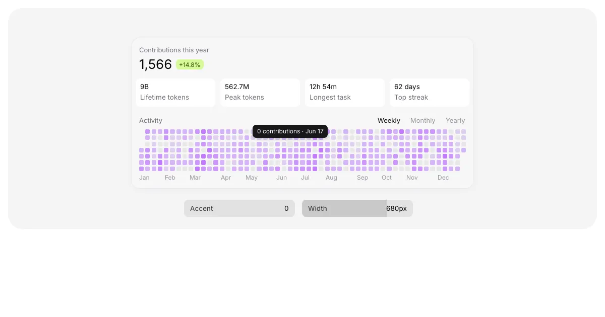

Contributions Card
A year of activity as a 53-week heat grid under a headline and stat tiles; tabs re-aggregate with a diagonal colour ripple and cells show their day on hover.

Usage
Add glowkit next to eframe:
cargo add glowkit eframeThen draw it inside any egui Ui:
use glowkit::prelude::*;
use glowkit::interactions::BoardContributions;
let counts: Vec<u32> = (0..365).map(|d| (d * 7 % 11) as u32).collect();
ui.add(BoardContributions::new("Contributions this year").counts(counts, 3).accent(egui::Color32::from_rgb(194, 122, 255)));Prefer to own the code? The glowkit CLI copies this component's source into your project, shadcn-style:
cargo install glowkit-cli
glowkit add board-contributions-cardEquivalent to
If you know this pattern from BoardUI, Contributions Card is the Rust version: an original egui implementation, not a port, that runs natively and in WebAssembly.
- Contributions CardBoardUI
About Contributions Card
Contributions Card is one of 29 components in glowkit's Charts category. It lives in the glowkit-interactions crate, enabled by the interactions feature of glowkit (on by default). It reads its colors from the active glowkit theme, so it matches the rest of your app in light, dark or a custom brand theme, and every color, size and timing has a setter to override it.
Charts that draw in and respond to the pointer: line, area, bar, pie and donut, radar, radial, gauges, sparklines, scatter, heatmaps and calendar heatmaps, funnels, treemaps, candlesticks, Sankey diagrams and KPI tiles.